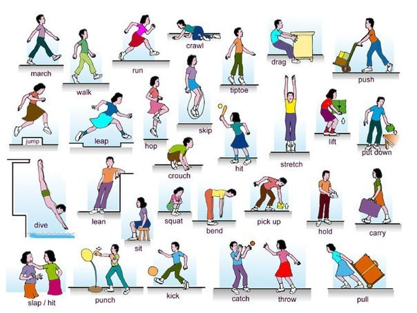
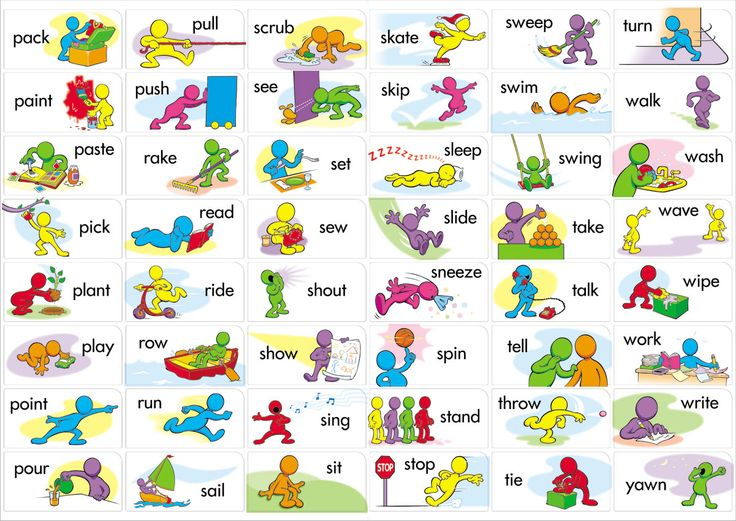
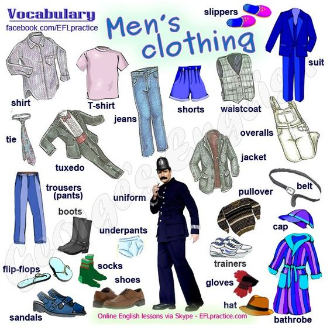
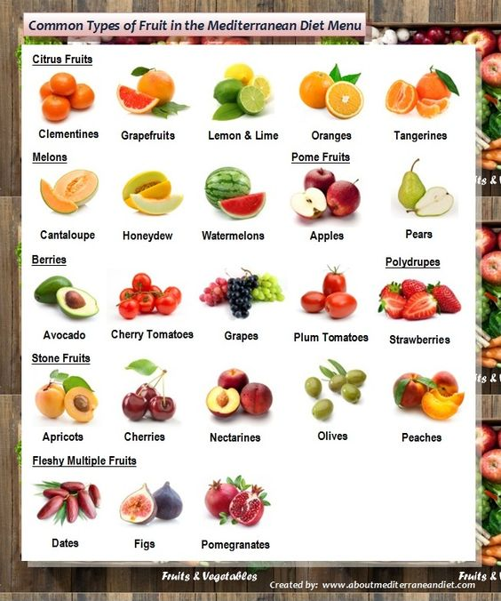
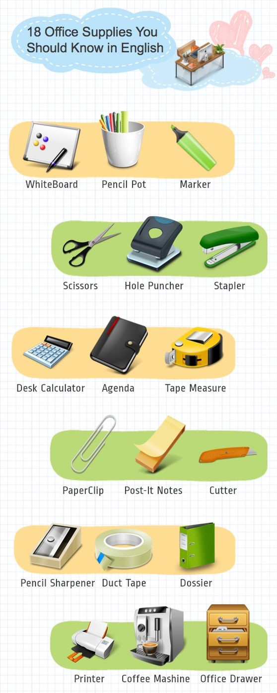
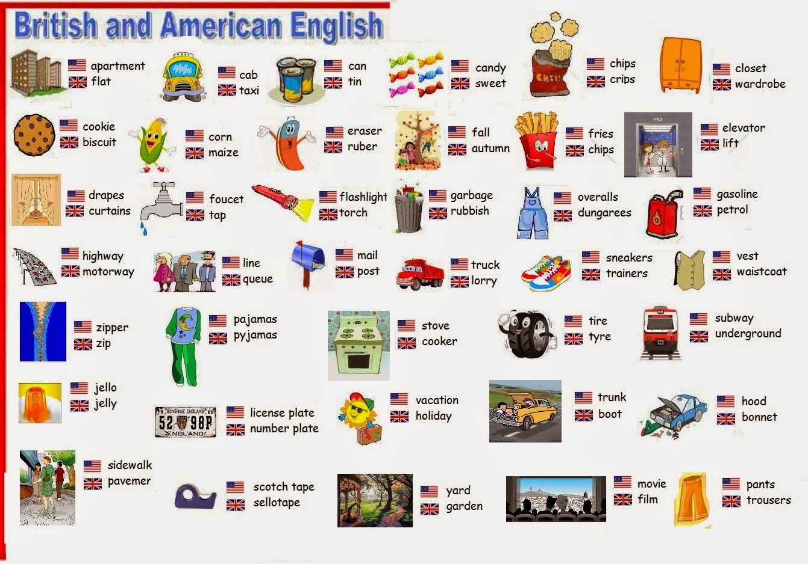
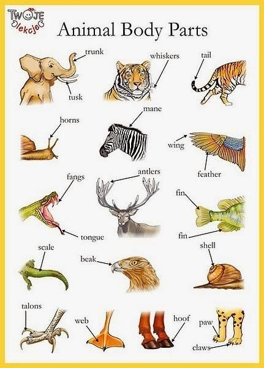

English
Table of Contents
- 1. 1368 words
- 2. Thinking in english
- 2.1. section 1
- 2.1.1. sight - i turned to look at the children, but they weren't any in sight, they had all run away.
- 2.1.2. traffic - the vehicles moving along a road or street.
- 2.1.3. signs - you will enjoy your stay here if you pay attention to oure street signs.
- 2.1.4. hurry - in a hurry; there is no hurry.
- 2.1.5. i wonder - i wonder. In England, each person speaks a different language.
- 2.2. section 2
- 2.3. section 6
- 2.4. preposition
- 2.5. future tense
- 2.6. situationism
- 2.7. modal verb
- 2.8. 定时从句
- 2.9. 分词
- 2.10. 非谓语动词
- 2.11. 24-5
- 2.12. 24-8
- 2.13. 24-14
- 2.1. section 1
- 3. Friends
- 4. Vocabulary
- 5. High frequency words
- 6. Phonetics
- 7. Business
- 8. IELTS
- 9. Modal particle
- 10. Reading
- 11. Writing
1 1368 words
1.1 noun
1.1.1 concrete noun
- thing
- time
time morning afternoon noon evening night tonight today tomorrow yesterday weekend month year season
spring autumn winter day date moment period history future birthday holiday festival schedule age
- weather
weather rain snow wind cloud
- nature
mountain air light water fire ice smoke heat ground sky river field forest sea stone star
- plant
grass tree crop
- animal
bird cat dog horse rabbit elephant bear tiger lion bull cow pig chicken fish sheep monkey snake reptile
- insect
insect bee butterfly spider
- bacteria
- place
hospital restaurant hotel university factory jail zoo park school store club bar court market town village city
- organization
company charity
- sound
voice noise music
- food
egg meat steak bread cake dessert soup sandwich noodle pie chocolate sauce
- meal
breakfast lunch dinner
- vegetable
potato tomato carrot lettuce bean
- fruit
apple orange banana
- ingredient
oil sugar salt butter cream
ingredient US: [ɪn'ɡridiənt] UK: [ɪn'ɡriːdiənt]
n.
1.a component of a mixture, especially an item of food or flavoring included in the recipe for preparing a dish
2.an element required for a situation, relationship, or plan
3.one of the foods or liquids that you use in making a particular meal
4.one of the things that give something its character or that make it effective
- drink
coffee milk tea juice beer wine alcohol
- nutrient
mineral vitamin protein
nutrient US: ['nutriənt] UK: ['njuːtriənt]
n.
1.a substance that provides nourishment, e.g. the minerals that a plant takes from the soil or the constituents in food that keep a human body healthy and help it to grow
2.a substance in food that plants, animals, and people need to live and grow
adj.
1.providing nourishment
- disease
fever flu cancer
- house
office room floor wall window door roof kitchen
- furniture
bed chair desk table seat couch
- clothes
shirt shoes cap hat coat dress pants uniform suits underwear pocket jeans button zip sock
- jewelry
diamond ring
- cosmetics
perfume lipstick powder
cosmetics US: [kɑz'metɪks] UK: [kɒz'metɪks]
n.
1.substances that you use on your skin to make yourself look more attractive
- transport
traffic bicycle ship boat plane train
- vehicle
motorcycle bus car truck brake engine gear tire wheel
- road
street bridge station
- device
lock key bell scale tap
- equipment
shower radio telephone camera computer TV fridge video
- container
box cup dish plate bowl basket tub sink pot pan
- material
cloth paper glass plastic gold paint chemical
- daily necessities
toy brush mirror chain board handle cartoon bottle wood clock knife pen book album menu
card envelope ticket pipe tube wire belt web film screen gift channel alarm
electricity towel carpet tool junk fork spoon medicine drug pill
- number
couple double load pack lot
- unit
meter inch pound gram piece
- thing
issue matter stuff object event
- time
- human
- family
parent daughter son father mother brother sister husband wife uncle aunt grandfather grandmother role
- community
kid child baby boy girl man woman friend lady gentleman boss customer student neighbor person
volunteer fool sir madam
- job
doctor nurse professor lawyer engineer teacher coach guard judge
- group
people class team human staff society generation army government family
- family
1.1.2 abstract noun
- words
topic subject joke question suggestion instruction permission
- document
story report novel note text letter email blog list menu
rule:law grammar principle
- information
message news update notice fact detail evidence clue background data sign knowledge
- state
condition environment situation mess balance peace emergency chance opportunity
- act
exercise practice test experiment lesson bath security attention focus step
education advertisement treatment trick habit service business homework
job: task project challenge
duty: responsibility fault
performance: concert opera drama
study: math art science philosophy psychology
arrangement: deal insurance account engagement
occasion: meeting interview party picnic wedding funeral barbecue ceremony
money: profit income salary loan cash cost credit deposit price tax bill budget
- activity
game discipline crime trade economy politics war trip fashion industry
sports: soccer football golf basketball race
- thought
idea view theory religion plan: strategy policy program
- entirety
network internet series career
system: language
transport
- other
favor privilege mistake risk advantage benefit problem trouble surprise secret award prize
diet property option case example sample score limit experience effort energy figure
1.1.3 composition nouns
- part
- region
side edge base core
- body
head eye ear face nose foot mouth tooth tongue neck shoulder breast chest stomach arm hand
finger nail leg knee throat brain heart lung muscle bone nerve hair skin blood sweat
- spirit
mind spirit soul emotion
feeling: shame stress respect desire pain sense
- strength
force
power: authority
ability: sight intelligence memory skill
- animal
tail wing
- plants
flower leaf root branch
- others
whole rest half
1.1.4 state nouns
- static
- shape
appearance
- size
space
- position
point line end bottom middle top front back center corner left right
direction: east west north south
- quality
feature character personality
- others
color weight tone material structure
- amount
number measurement distance volume angle temperature
level: degree grade rank standard
rate: speed percentage
- kind
type
- shape
- dynamic
1.2 verb
1.2.1 simple verb
- origin
be
go
come
make
- belong
have
get
give
take
- final position
put
lay place
bring
send
hold
keep
stay
hang
settle
- relative position
cover
support
mix
switch
link
join
connect
stick
tie
meet
cross
- trajectory
move
shift
pass
raise
lift
rise
drop
fall
follow
lead
carry
bounce
roll
shake
screw
- speed
run
rush
hurry
- strength
touch
hit
knock
crash
throw
rub
pull
push
draw
press
- space
open
close
shut
fit
enter
fill
pump
spill
spray
clean
clear
wipe
leave
quit
arrive
reach
fix
set
- time
begin
start
happen
finish
stop
- direction
turn
- wholes and parts
break
crack
split
tear
divide
cut
- figure
bend
fold
twist
stretch
spread
- size
grow
- behaviour
look
see
listen
hear
say
speak
talk
tell
ask
think
believe
know
like
love
do
- others
become
seem
feel
sound
smell
taste
1.2.2 complex verb
- look
find watch observe ignore search show
- say
agree cancel let allow
claim warn introduce explain express confirm
beg charge order
argue blame praise encourage complain promise insist shout threat
answer call count pronounce
- think
consider guess deserve offer
doubt suspect trust forget remember imagine mean
learn understand wonder
decide try want hope wish expect
will shall should may might can must dare need
impress attract
- feeling
enjoy suffer appreciate care hate worry thank welcome bless thrill freak shock bother annoy disturb
- nature phonomenon
die live burn boil
- human behaviour
dance ride lie climb beat
hug
sit stand walk kick jump skip
smile laugh cry
eat kiss suck lick blow cough sing
breathe
bleed
sleep wake relax
hurt injure cure inject
- live actions
cook bake fry drive measure wear wash tape record post travel screw dig hide pack mark
- community actions
buy sell shop pay spend waste invite rent fight kill steal cheat invest rob wait
marry divorce borrow lend owe vote bet celebrate play pretend help direct entertain interrupt
distract design build invent copy prepare organize manage handle treat control
use apply save choose accept pick collect win fail miss lose check examine compare solve analyze
- exercises
skate swim fly shoot
- work
interview hire fire compete retire
- study
read write spell translate
- releation btw things
match qualify equal share include separate belong depend involve
- movement btw things
change develop improve reduce add promote
- affection btw things
damage spoil ruin affect attack
1.3 adj
1.3.1 stuff
big huge little small medium
high low
long short tall
deep shallow
thick thin
fat slim
narrow wide
heavy light
straight curved flat
round square
near far
full empty blank bare dirty
new fresh
extra only single poor rich slight total
hard soft tough tender smooth rough sharp blunt fresh raw pure plain even
strong weak tight loose firm tense
liquid gas solid
hot warm cold cool
dry wet
bright dark dull
sweet bitter delicious sour spicy
loud quiet
1.3.2 human
young old
hungry ill sick tired blind sore born pregnant alive
busy violent wild
beautiful ugly sexy
smart clever stupid confused awake asleep familiar patient
polite lazy honest rude brave aggressive
interested curious proud sure confident
happy glad sad upset sorry guilty calm afraid angry crazy mad excited bored disappointed jealous lonely
1.3.3 action
easy hard difficult
late due urgent efficient
possible available
dangerous safe
wrong strict correct proper lucky fair successful
1.3.4 relations
special regular
same different
typical normal common general popular average particular own
serious causal important main formal professional
necessary
free relative legal physical mental local native international cheap expensive separate public worth
1.3.5 others
good nice fine great perfect wonderful amazing excellent
bad terrible awful
real true false fake
complete
exact specific
complicated simple
fun horrible weird strange comfortable incredible gross
1.4 prep
1.4.1 dynamic
across along past over up down through on off in out against
from
to toward for about
1.4.2 static
at
by beside before after behind between around
beyond under above below
outside inside within
of with without
during since till
instead of
than as
besides among except including
according to
despite per
1.5 adv
now early just then recently ago already yet ever never forever
here there
away forth apart together aside
extra alone
quite much very well extremely almost enough
actually especially absolutely certainly
fast slow soon suddenly immediately gradually
again often usually always
finally eventually
otherwise
probably perhaps maybe
also too either neither else
when where how why what
1.6 conjuntion
because
but though
and
if unless except
while
or whether
1.7 determiner
last next
all any some both each either neither every few many much
this that these those another such
I you he she we they it
which who
a an the
bye hello no yes pardon please wow damn
Mr. Ms.
zero one two three four five six seven eight nine ten hundred thousand million billion
2 Thinking in english
2.1 section 1
2.1.1 sight - i turned to look at the children, but they weren't any in sight, they had all run away.
sight US: [saɪt] UK: [saɪt]
n.
1.the ability to see using the eyes
2.the perception of something using the visual sense
3.the range or field of vision
4.something that somebody sees
5.something that is worth seeing, especially the landmarks of a place
6.an alignment device on a gun or surveying instrument used to guide the eye in aiming or determining direction
7.a determination of direction made with a gun or surveying instrument
8.an opportunity to observe or inspect something
9.a point of view
10.something or somebody that has an unpleasant, distressing, or disarranged appearance
v.
1.to see or notice somebody or something
2.to observe something, or take measurements of something, using an optical device
3.to take aim at something with a firearm
4.to adjust the sights of a gun
5.to look carefully in a particular direction
6.to see someone or something suddenly or in the distance
7.to aim a gun at something
2.1.2 traffic - the vehicles moving along a road or street.
traffic US: ['træfɪk] UK: ['træfɪk]
n.
1.the movement of vehicles on a road or in an area
2.the movement of ships, trains, or aircraft between two places, or the volume of passengers or goods transported by sea, rail, or air
3.the business of transporting goods or people
4.illegal trade in goods such as drugs or weapons
5.the volume or flow of messages carried by a communications system
6.dealings or negotiations between people
7.aircraft, ships, and trains that travel from one place to another
8.the information that passes through a communications system
9.the process of buying and selling things such as drugs or weapons illegally
10.the vehicles that are travelling in an area at a particular time
v.
1.to have dealings with somebody or something
2.to engage in illegal trading
3.to trade or exchange anything
4.to buy and sell things such as drugs or weapons illegally
traffic noise kept me awake.
wasn't much traffic on the roads.
must have got caught in rush-hour traffic.
were stuck in heavy traffic for more than an hour.
to help ease traffic congestion in the city
believe that the plans will increase the volume of traffic.
2.1.3 signs - you will enjoy your stay here if you pay attention to oure street signs.
birds pooping on you is a sign of good luck.
2.1.4 hurry - in a hurry; there is no hurry.
i went to my office in a hurry.
i had my breakfast in a hurry.
2.1.5 i wonder - i wonder. In England, each person speaks a different language.
to think about something that you are not sure about and try to guess what is true, what will happen etc.
2.2 section 2
2.2.1 look forward - look adv + to/at sth
we are all very excited and are looking forward to the Olympic Games because they have never been held before in this country.
2.2.2 get … in order
in order
un.
1.in a correct sequence or arrangement
2.in a correct or appropriate condition
3.actions or statements that are in order are appropriate for a particular situation
i have been trying to get my new room in order. This has not been easy because i own over a thousand books.
2.2.3 jealous
jealous US: ['dʒeləs] UK: ['dʒeləs]
adj.
1.feeling bitter and unhappy because of another's advantages, possessions, or luck
2.feeling suspicious about a rival's or competitor's influence, especially in regard to a loved one
3.possessively watchful of something
4.demanding exclusive loyalty or adherence
5.unhappy because someone has something that you would like or can do something that you would like to do
6.unhappy and upset because you think someone who you love is attracted to someone else
7.wanting very much to protect or keep something
my boyfriend gets jealous when i talk to other boys.
he's jealous of his friend because his brother is more intelligent and makes more money.
2.2.4 dubbed
dubbed US: ['dʌbd] UK: ['dʌbd]
v.
1.to add a new soundtrack to a movie or television show with the dialogue in a different language but synchronized as closely as possible with the actors' lips
2.to make a thrust at somebody or something
3.to add sounds that have been recorded separately to a movie soundtrack
4.to beat drums or a drum
5.to honor somebody by giving him or her a new name or description
6.to copy something already recorded onto a different recording medium
7.to make a copy of a record or tape
8.to clean meat, especially fish or poultry, in preparation for sale or eating
9.to perform something such as a golf stroke ineptly
10.to give a descriptive nickname to somebody or something
11.to give somebody a knighthood by tapping the person on the shoulder with a sword as part of a formal ceremony
12.to dress a material such as leather or timber to make it smooth or even
13.to add material such as hair or fur to an artificial fly, to give body and a natural look
14.to give someone or something a particular name or description, often a humorous one
15.to change an existing tape or recording by adding new sound to it
16.to give a man a knighthooda title given by a king or queen for special achievements or service to his country
plays are performed on stages, films are shown on screen. In your country, films in English are either shown with subtitles, or they are dubbed.
2.2.5 collided
collide US: [kə'laɪd] UK: [kə'laɪd]
v.
1.to hit a person or object moving towards you or a person or object you are moving towards
2.to come into conflict with somebody else or another group
3.if people or things collide, they crash into each other
4.to find it impossible to agree about something
5.come together violently;meet and strike
i jumped for the ball and collided with another player. we both had cuts on our heads, but i had to go to hospital for eight stitches.
the president has again collided with congress over his budget plans.
2.2.6 democracy
democracy US: [dɪ'mɑkrəsi] UK: [dɪ'mɒkrəsi]
n.
1.the free and equal right of every person to participate in a system of government, often practiced by electing representatives of the people by the majority of the people
2.a country with a government that has been elected freely and equally by all its citizens
3.a system of government based on the principle of majority decision-making
4.the control of an organization by its members, who have a free and equal right to participate in decision-making processes
5.the right to a form of government in which power is invested in the people as a whole, usually exercised on their behalf by elected representatives
6.a system of government in which people vote in elections to choose the people who will govern them
7.a system of running a business or organization in which everyone can vote and share in making decisions
in a democracy, people vote for the political party that they want to form the government.
2.3 section 6
2.3.1 聊天主体是啥，主语就是啥
2.3.2 观点 + 阐释
2.4 preposition
2.4.1 preposition in english is usually verb in chinese.
we walked along the street.
i heard the crunch of metal against metal.
roy drove his bus into the back of the car.
2.4.2 preposition in english not only represents space but aslo many abstract concepts.
dinner is on me.
i'm behind you.
i'm so much into that handsome guy.
i'm off work now.
my eyes are from my mother. // look like
it is beneath hime to tell a lie.
2.4.3 on,in,at
| prep | description of time |
|---|---|
| on | specfic day |
| in | a preriod of time |
| at | moment |
| exception | evening: in the evening, evening is the preriod which is from night to morning. |
| night : at night , time for sleeping, so you feel time has gone quite quickly. |
| prep | description of location |
|---|---|
| at | at a point, were you at the party too? |
| in | in an enclosed space |
| on | on a surface |
| prep | abstract meaning |
|---|---|
| on | supported by something. |
| the beggar stood on his head and sang songs relating to a particular subject, thing, or activity, on china, | |
| she is cheating on me | |
| happening or being performed at the present time. | |
| we were on a break | |
| in | you are interested in him |
| over | positioned on or moving to the other side of something such as a barrier, obstacle, or area of land. |
| it's over here. | |
| more than a particular amount, measurement, or age. | |
| she got the power over me. | |
| off | eliminate or remove something. |
| take off your clothes. | |
| of | 直接相关 dream of him |
| about | 关于sth的一些事 |
| with | 带了东西 |
| with…on… : jane put a piece of paper with her name and address on it into a bottle. | |
| at | 瞄准 the boy threw the ball at the bog |
2.5 future tense
2.5.1 will being
i will being arrived in the party. //将来必定会发生
2.6 situationism
2.6.2 pity ;noun
what a pity
out of pity 出于同情
2.6.3 return ;verb
prefix: re - again
repeat,reset,rewrite,remark
2.7 modal verb
origin: Richi can to speak Chinese.
now : Richi can speak Chinese.
can - 问能力
could - 选择权交给他人
'The play may begin at any moment.' I said.
'It may have begun already.' Susan answered.
may /might may/might not
can/could cannot/couldn't
must
bold 推测
1.猜现在的情况 + 动词原形
2 猜过去的情况 + have + 过去分词
this boy may have lost his way.
it must have rained yesterday.
medal must be over 3mm.
need
我不需要你
你需要个男朋友
我本不需要买这个 - i needn't have bought this. 表示态度时
你没必要生气 - you needn't have angry. or you don't have to be angry.
咱们本不需要花这么多钱
should/ought to
i should have spent more time with my parents. - 本该
have to
- i have to have the class in my car.
- i didn't have to work very late last night.
2.8 定时从句
定语位置
单个词在前面
多个词在后面
a girl who drives a red car is my sister.
事物的发展
第一句的结尾是第二句的开头
i fall in love with the boy who doesn't like me.
省略词
the wowan who sits beside me is annoying. / 两个动词，不可省略
the students who are listening to the class are concentrated. / 可以省略
2.9 分词
spring US: [sprɪŋ] UK: [sprɪŋ]
n.
1.a resilient metal coil that will store energy when compressed and release energy when returning to its original shape.
2.the ability of an object to revert rapidly to its original position after being extended, compressed, or placed under tension
3.a rapid forward or upward movement
4.the season of the year between winter and summer during which many plants bring forth leaves and flowers. It runs from March to May in the northern hemisphere, and from September to November in the southern hemisphere.
5.a time of new growth and regeneration
6.a source of water that flows out of the ground as a small stream or pool
7.a source from which something, e.g. a character trait, a feeling, or a situation, proceeds or develops
8.warping, cracking, or bending, especially when caused by great force
9.a long thin piece of metal in the shape of a coil that quickly gets its original shape again after you stop stretching it
10.a quick jump forward or up
v.
1.to move rapidly upward or forward in a single movement or in a series of rapid movements
2.to leap over a barrier
3.to move back rapidly to an original position after being forced in another direction
4.to appear or come into existence quickly
5.to be uttered, especially as a sudden and almost involuntary reaction to something
6.to originate from a particular source
7.to be descended from a person or family
8.to operate a device or trap by releasing a mechanism that was held in check
9.to provide something, e.g. a vehicle or piece of furniture with springs
10.to move suddenly out of place, or come suddenly loose, within a mechanism
adj.
1.relating to, occurring in, or appropriate to the season of spring
2.normally grown or growing in the season of spring
3.having or containing springs, especially for cushioning or as part of a clockwork mechanism
4.acting like a spring in being held back then quickly releasing energy
i became the proud owner of a bed.
i did not grow up until i was 26. //带有晚了的含义
2.10 非谓语动词
suggest/admit/enjoy/avoid/finish/practise/keep/mind
remember/regret/forget/try/need
to do 表示未完成
doing 表示过去发生
instead of + doing 语感:两种选择，选了一个
without + doing 语感:做一件事，另一件有必要的事没做
过去分词 - 完成
现在分词 - 正在进行
2.11 24-5
2.11.1 dream
dream US: [drim] UK: [driːm]
n.
1.a sequence of images that appear involuntarily to the mind of somebody who is sleeping, often a mixture of real and imaginary characters, places, and events
2.a series of images, usually pleasant ones, that pass through the mind of somebody who is awake
3.something that somebody hopes, longs, or is ambitious for, usually something difficult to attain or far removed from present circumstances
4.an idea or hope that is impractical or unlikely ever to be realized
5.a state of inattention owing to preoccupation with thoughts or fantasies
6.somebody or something that seems particularly good-looking or wonderful
7.something that you experience in your mind while you are sleeping. A dream in which frightening things happen is called a bad dream or a nightmare
8.something good that you hope you will have or achieve in the future
v.
1.to experience vivid mental images of something while sleeping
2.to let the mind dwell on pleasant scenes and images while awake, often resulting in inattention
3.to want something very much and imagine having or doing it, though it may be unlikely
4.to think of or consider doing something regarded as wrong or inappropriate
5.to think about something that you hope to have or achieve
6.have dreams;see,experience,in a dream;imagine;suppose
7.have dreams;see,experience,in a dream;imagine;sup-pose
8.have dreams;see,experience,in adream;imagine;suppose
9.have dreams;see,experi-ence,in a dream;imagine;suppose
adj.
1.occurring in or reminiscent of a dream
2.perfect and wonderful in every way
2.11.2 age
indicate a range of time, act your age
age US: [eɪdʒ] UK: [eɪdʒ]
n.
1.the length of time that somebody or something has existed, usually expressed in years
2.a stage or phase in the lifetime of somebody or something
3.the age at which somebody is legally considered to be an adult
4.the condition of having lived many years
5.a period in history, especially a long period or one associated with and named for a distinctive characteristic, achievement, or influential person
6.a relatively short division of recent geologic time, shorter than an epoch
7.a level of development equivalent to that of an average person of a particular age
8.a generation of people
9.the number of years that someone has lived
10.the time of life when you are allowed by law to do something
v.
1.to become old, develop the characteristics of being old, or cause somebody or something to become or seem old
2.to cause a food or wine to mature, develop a desired flavor, or become more tender, or to become improved in this way over time
3.to stabilize an electronic device by using it
4.to look or seem older
5.to become older
6.if wine ages or you age it, its taste improves because it is kept for some time
7.to calculate or guess the age of something
8.make old
9.mature;ripen
10.advance in age;grow old
np.
1.a very long time
2.human history
2.11.3 throw
throw down the glove - 打架
throw dust in/into sb's eyes - 蒙蔽
throw US: [θroʊ] UK: [θrəʊ]
n.
1.an act of throwing something such as a ball or missile, or dice in a game
2.the distance that something is thrown or can be thrown
3.an act of being thrown, or a way of throwing an opponent, in wrestling or judo
4.the score obtained by throwing something such as dice or darts in a game
5.each item or attempt
6.a loose cover used to protect furniture
7.the maximum movement in a single direction of a machine part driven by a crank, cam, or eccentric
8.the distance moved by the tip of the needle of a measuring instrument
9.the vertical displacement up or down produced by movement along a geological fault
10.a large piece of cloth that you put over a chair, bed, etc. to make it look nice
v.
1.to make a movement that causes somebody, e.g. an opponent in wrestling or judo or a horseback rider to fall to the ground
2.to propel something through the air by swinging the arm and releasing the object from the hand
3.to propel something through or into the air by a mechanical means, or to emit or radiate something
4.to put or drop something somewhere without paying attention to where it is left
5.to put somebody or something forcefully into a particular position or in a particular direction
6.to bring somebody or something suddenly or unexpectedly into a particular state, especially an undesirable one
7.to take somebody by surprise to the extent that he or she does not know how to react
8.to send out light to illuminate a place, or create a shadow by blocking light
9.to cause doubt or suspicion in people's minds by saying or doing something
10.to direct a look or glance quickly or suddenly
2.12 24-8
2.12.1 trouble
trouble US: ['trʌb(ə)l] UK: ['trʌb(ə)l]
n.
1.a condition of distress, anxiety, or danger
2.a source or cause of worry, distress, or concern
3.something that is extremely difficult or presents a problem
4.an actual or perceived failing or drawback
5.an illness or physical condition involving a particular body part that is not functioning as it should
6.the effort or exertion involved in doing something
7.disorder or unruly behaviour in a public place
8.a condition in which something mechanical or electronic is not functioning or operating as it should
9.a health problem affecting a part of your body
10.additional or special effort that causes you problems or difficulties
v.
1.to cause worry, distress, or concern to somebody or something
2.to cause pain or discomfort to somebody or something
3.to put somebody to the inconvenience of doing something
4.to make an effort to do something or take pains in doing it
5.to agitate or disturb something, especially the surface of water
6.to make someone worried
7.to cause someone a slight problem or difficulty by asking them to do something for you
8.if a part of your body is troubling you, it is not working as it should and is causing you pain
9.(esp.in neg.and interr.)bother or inconvenience oneself
10.cause worry,discomfort,anxiety or inconvenience to
i troubled with my teeth. //让我不舒服的意思
2.12.2 effect
side effect 副作用
cause and effect 因果
2.12.3 believe in
believe 相信
believe in 言听计从
2.12.4 fixed expression
Collocation refers to the way in which some words regularly occur together. //不一定要背,只是一起经常出现
2.12.5 have ever seen
2.13 24-14
2.13.1 punish
Girls were punished for being late.
3 Friends
3.1 settle down
it was time to settle down with the right man, get married and start a family
3.2 give me a break
give her a break. it's hard being on your own for the first time
4 Vocabulary
4.1 IELTS
4.1.1 04-26-2019
"that would be a challenge ", a farmer thought about pumpkin race in the village, slicing a bread. the winner who have maximum pumpkin length would get a dress with white lace, "what a horrible thing", he looked at his small pumpkin which seed was sowed last year, shrugging his shoulders. a hour later, the farmer was on the way to race, "look at this small pumpkin", one old man obstructed the bridge and prescribed, "hi layman, if I were you, i will take a bigger one", "i will not take this abuse, father" the farmer laughed, 3 hours later, after the sound of slapping sth, the farmer shocked, "i am the winner", he looked around and suddenly realized that people in the village knew that he wanted the dress with lace for his wife's gift.
- layman
layman US: ['leɪmən] UK: ['leɪmən]
n.
1.somebody, especially a man, who is not trained or expert in a specific area
2.somebody, especially a man, who does not belong to the clergy
3.someone who is not trained to a high or professional standard in a particular subject
4.someone who is a member of a Christian church but not officially employed by it as a priest, minister etc
- maximum
maximum US: ['mæksɪməm] UK: ['mæksɪməm]
n.
1.the largest amount, number, extent, or degree possible or allowed
2.the largest amount or value or highest level that something variable can reach or reaches during a period
3.the largest number in a mathematical set
4.in mathematics, the greatest value that a continuous function can attain over a specific interval
5.the interval during which a variable star is most luminous
6.the magnitude of a variable star at its greatest
adj.
1.of the greatest possible or permitted amount or value
2.the largest in amount, size, or number that is allowed or possible
adv.
1.at the greatest extent
2.up to a particular amount, size, or number but no more
- shrug
shrug US: [ʃrʌɡ] UK: [ʃrʌɡ]
v.
1.to raise and drop the shoulders briefly, especially to indicate indifference or lack of knowledge
2.to move your shoulders up and let them drop to show that you do not know something or do not care
3.lift(the shoulders)slightly(to show indifference,doubt,etc)
n.
1.a gesture of raising and dropping the shoulders briefly
2.the action of moving your shoulders up and then dropping them
3.a very short cardigan for women that covers only the chest and the upper back
- challenge
challenge US: ['tʃæləndʒ] UK: ['tʃælɪndʒ]
v.
1.to invite somebody to participate in a fight, contest, or competition
2.to dare somebody to do something
3.to call something into question by demanding an explanation, justification, or proof
4.to stimulate somebody by making demands on the intellect
5.to order somebody to stop and produce identification or a password
6.to make a formal objection against the inclusion of a prospective juror on a jury
7.to expose a person or animal to a substance in order to determine whether an allergy or other adverse reaction will occur
8.to question whether something is true, accurate, or legal
9.to invite someone to compete or fight
10.to test someone’s skill and abilities
n.
1.an invitation to somebody to compete in a fight, contest, or competition
2.a test of somebody's abilities, or a situation that tests somebody's abilities in a stimulating way
3.a questioning of something by demanding an explanation, justification, or proof
4.an order to somebody to stop and produce identification or a password
5.an objection against the inclusion of somebody on a jury
6.a claim that somebody is not entitled to a vote or that a vote is invalid
7.exposure of a person or animal to a substance in order to determine whether an allergy or other adverse reaction will occur
8.something that needs a lot of skill, energy, and determination to deal with or achieve, especially something you have never done before and will enjoy doing
9.an action or idea that questions whether something is true, accurate, or legal
- abuse
abuse US: [ə'bjuz] UK: [ə'bjuːz]
n.
1.the physical, psychological, or sexual maltreatment of a person or animal
2.the illegal, improper, or harmful use of something
3.an illegal, improper, or harmful practice
4.insulting or offensive language
5.the harmful use of drugs or alcohol
6.cruel, violent, or unfair treatment, especially of someone who does not have the power to prevent it
7.the use of something in a bad, dishonest, or harmful way
8.angry offensive comments
v.
1.to treat a person or animal cruelly, whether physically, psychologically, or sexually, especially on a regular or habitual basis
2.to use something in an improper, illegal, or harmful way
3.to speak insultingly or offensively to somebody
4.to masturbate
5.to treat someone in a cruel or violent way
6.to use something in a bad, dishonest, or harmful way
7.make a bad or wrong use of
8.Say severe,cruel or unjust things to sb. Or about sth.
- slice
slice US: [slaɪs] UK: [slaɪs]
v.
1.to cut something into flat pieces
2.to be cut into flat pieces
3.to cut something easily
4.to move through something easily and quickly
5.to hit a ball on its edge so that it curves or spins
6.to reduce an amount of time, money, etc
7.[Sports]to make a mistake when hitting a ball and make it curve to the side instead of going straight
n.
1.a flat piece of food that has been cut from something larger
2.<informal>a part or share of something
3.[Sports]a way of hitting the ball on its edge so that it curves or spins
4.[Sports]a mistake in hitting a ball that makes it curve to the side instead of going straight
5.a flat tool used for cutting and lifting food
- horrible
horrible US: ['hɔrəb(ə)l] UK: ['hɒrəb(ə)l]
adj.
1.very bad, unpleasant, or unsightly
2.sufficiently frightening, distressing, or shocking as to provoke horror
3.unkind, rude, or ill-behaved
4.used for describing someone or something that you do not like
- prescribe
prescribe US: [prɪ'skraɪb] UK: [prɪ'skraɪb]
v.
1.to order a course of treatment for a patient, usually the use of a particular drug at set times and dosages
2.to recommend a particular course of action or treatment as a remedy for something
3.to say with authority that a course of action should be taken
4.to lay down rules or laws
5.to claim a right to something on the grounds of possession over a long period of time
6.if a doctor prescribes a drug or treatment, they say you should have it
7.to state officially what should be done in a particular situation
8.abvise or order the use of
- obstruct
obstruct US: [əb'strʌkt] UK: [əb'strʌkt]
v.
1.to cause a blockage in a road, course, or passage
2.to cause a serious delay in action or progress
3.to be in the way and prevent a clear view of something
4.to block a path, passage, door etc so that it is difficult or impossible for someone or something to move along or through it
5.to take action in order to prevent someone from doing something or to prevent something from happening
6.be,get,put something in the way of;block up
- sow
sow US: [saʊ] UK: [səʊ]
n.
1.the adult female of several animals such as the bear, mink, badger, guinea pig, and hedgehog
2.a channel through which molten iron runs into a mould in the process of casting pig iron
3.a mass of iron that has hardened in a channel or mould in the process of casting pig iron
v.
1.to scatter or plant seed on an area of land in order to grow crops
2.to instill and spread an idea, especially one which is negative or divisive
3.to spread something thickly with something
4.to plant seeds in the ground
- shock
shock US: [ʃɑk] UK: [ʃɒk]
n.
1.an unexpected, intense, and distressing experience that has a sudden and powerful effect on somebody's emotions or physical reactions
2.a group of sheaves of grain or corn set upright in a field for drying
3.the feeling of distress or numbness experienced by somebody who has had a shock
4.a state of physiological collapse, marked by a weak pulse, coldness, sweating, and irregular breathing, and resulting from a situation such as blood loss, heart failure, allergic reaction, or emotional trauma
5.a sudden and violent impact, collision, or blow
6.an unexpected event that threatens or damages a system, organization, or conventional situation
7.a large amount of thick shaggy hair
8.the movement or violent shaking felt after a collision, explosion, or earthquake
9.the feeling of being very surprised by something bad that happens unexpectedly
10.something that happens unexpectedly and makes you feel very surprised and upset
v.
1.to make somebody feel suddenly and acutely distressed or upset
2.to arrange sheaves of grain or corn in a shock
3.to make somebody feel deeply offended or disgusted, or be likely to feel offended or disgusted
4.to give an electric shock to a person or animal
5.to cause a state of shock in somebody
6.to collide, or cause people or things to collide
7.if something bad and unexpected shocks someone, they are very surprised or upset by it
8.to make someone feel embarrassed or offended by saying or doing something offensive or immoral
- slap
slap US: [slæp] UK: [slæp]
n.
1.a blow made with the open hand or a flat object
2.the noise made by a slap, or something that sounds like it
3.something that rebukes, insults, or hurts
4.make-up, whether for personal everyday use or for the theatre
5.a sharp hit with the palm of the hand
6.the sound of a slap or something similar hitting a surface
7.make-up 1
v.
1.to hit somebody or something with an open hand or flat object
2.to strike sharply and noisily, as if with a slap
3.to put something down sharply or noisily on something else
4.to put something on, make something, or do something, quickly and carelessly
5.to apply something as a punishment, penalty, or restriction to somebody or something
6.to add something as a punishment or an extra cost
7.smack;strike with the palm of the hand
8.strike with the openhand or with something flat;smack
adv.
1.forcefully, and often with the sound or effect of a slap
2.exactly, and usually with suddenness and force
3.suddenly, with a lot of force
- lace
lace US: [leɪs] UK: [leɪs]
n.
1.a delicate fabric made by weaving cotton, silk, or a synthetic yarn in a pattern that leaves small holes between the threads
2.a long cord that is used to tie two parts of a garment, shoe, or boot together and is threaded through holes or around hooks
3.ornamental gold or silver braid used on military officers' uniforms and hats
4.light delicate cloth with patterns of small holes in it
5.a thick piece of string used for tying shoes or boots
v.
1.to tie the edges of something with holes or hooks together by threading laces through the holes or around the hooks, pulling the edges close, and knotting the laces
2.to thread a lace or cord through holes or around hooks
3.to decorate or trim something with lace
4.to add a small amount of alcohol or a drug to a drink or to food
5.to add an amount of something to something else to enhance it
6.to mark something with streaks of a different colour
7.to intertwine something with something else
8.to beat or thrash somebody
9.to put a lace through the holes in a shoe
10.to tie your shoes, or to fasten something with a lace
4.1.2 04-28-2019
Following the guideline, a man and a woman was arriving a seaside resort, "I have been accumulated money for half a year for this travel but it worths", the man said, sprawling on beach. "help", the woman handed over the man with a champagne. "this cork is hard to be put out", the man was panting, "i should know the quality of drink got from retailer", "let it goes, honey", she sit on a inert stone and said, "I remember the first day we met, honest speaking, I was total freaked out when you ran into my home and in a coma". "at that time I was like, in a repeat plot without dub, sovereign who is my father was killing his people for power, I felt his evil by ambition", he said, after a while he smiled, "after that I am fascinated when you met my eyes, and without you, I can't have done it, you know, psychiatry". "will you be back?" she worried, "I dont want to be a hero, but stopping him is the first privilege for me", he hugged over her.
- resort
resort US: [rɪ'zɔrt] UK: [rɪ'zɔː(r)t]
n.
1.a place that is popular for recreation and vacations and provides accommodations and entertainment
2.a person, place, or course of action seen as a source of help in dealing with a problem
3.the act of turning to somebody or something for help in dealing with a problem
4.the act of going somewhere frequently or in large numbers
5.a place frequently visited
6.a place that many people go to for a vacation
- accumulated
accumulated US: [ə'kjumjə.leɪt] UK: [ə'kjuːmjʊleɪt]
v.
1.to collect or obtain a large amount of something over a period of time
2.to gather, grow, or increase over a period of time
3.to get more and more of something over a period of time
4.make greater in quantity or size;collect;heap up
- dub
dub US: [dʌb] UK: [dʌb]
v.
1.to add a new soundtrack to a movie or television show with the dialogue in a different language but synchronized as closely as possible with the actors' lips
2.to make a thrust at somebody or something
3.to add sounds that have been recorded separately to a movie soundtrack
4.to beat drums or a drum
5.to honor somebody by giving him or her a new name or description
6.to copy something already recorded onto a different recording medium
7.to make a copy of a record or tape
8.to clean meat, especially fish or poultry, in preparation for sale or eating
9.to perform something such as a golf stroke ineptly
10.to give a descriptive nickname to somebody or something
11.to give somebody a knighthood by tapping the person on the shoulder with a sword as part of a formal ceremony
12.to dress a material such as leather or timber to make it smooth or even
13.to add material such as hair or fur to an artificial fly, to give body and a natural look
14.to give someone or something a particular name or description, often a humorous one
15.to change an existing tape or recording by adding new sound to it
16.to give a man a knighthooda title given by a king or queen for special achievements or service to his country
- cork
cork US: [kɔrk] UK: [kɔː(r)k]
n.
1.a usually cylindrical piece of material used as a bottle stopper
2.the light flexible outer bark of the cork oak tree.
3.a small float used in fishing to maintain a hook or net suspended in the water
4.dead tissue that forms a protective outer layer on plants and is part of the bark in woody plants
5.an object used for blocking the hole in a bottle, especially a bottle of wine. Corks are made of cork or sometimes plastic. You use a corkscrew to remove them
v.
1.to stop or seal something, especially a bottle, with a cork
2.to restrain feelings, especially strong negative ones such as anger or grief
3.to blacken something, especially somebody's face and hands, with charred cork
un.
1.county town of County Cork, southern Ireland. It is a port on the Lee River and the second largest city in the Republic of Ireland.
2.coastal county in Munster Province, southwestern Republic of Ireland.
- sovereign
sovereign US: ['sɑvrən] UK: ['sɒvrɪn]
n.
1.the ruler or permanent head of a state, especially a king or queen
2.a gold coin worth one pound, used in Britain between the early 17th and the early 20th centuries
3.an old unit of money in the form of a gold coin worth one pound
adj.
1.self-governing and not ruled by any other state
2.having supreme authority or power
3.outstanding, e.g. in its excellence or effectiveness
4.a sovereign nation rules itself
5.used for referring to the highest power in a country, or to the person or institution that has the highest power
- pant
pant US: [pænt] UK: [pænt]
v.
1.to take short fast shallow breaths, especially when excited, hot, or after physical exertion
2.to say something while trying to catch your breath
3.to have a strong desire and yearning for somebody or something
4.to throb at a fast rhythm
5.to breathe very loudly with your mouth open, for example when you have been running or exercising
6.take short,quick breaths;gasp:
7.to breathe or utter gaspingly
n.
1.a short fast shallow breath
2.a pair of trousers
- privilege
privilege US: ['prɪvəlɪdʒ] UK: ['prɪvəlɪdʒ]
n.
1.an advantage, right, or benefit that is not available to everyone
2.the rights and advantages enjoyed by a relatively small group of people, usually as a result of wealth or social status
3.a special treat or honor
4.the special right to confidentiality of communication between two parties, e.g. a lawyer and client or doctor and patient
5.the right to or granting of special treatment or benefits such as freedom from prosecution to members of a legislative body
6.an option to buy or sell stocks over a period of time
7.a special benefit that is available only to a particular person or group
8.a way of life that involves having many advantages and opportunities, without working hard for them
9.a situation in which lawyers, doctors, and other professional people are legally allowed to keep their discussions with people secret
v.
1.to grant special rights or benefits to somebody or something
2.to exempt or release somebody or something from something
- psychiatry
psychiatry US: [sɪ'kaɪətri] UK: [saɪ'kaɪətri]
n.
1.a medical specialty concerned with the diagnosis and treatment of disorders that have primarily mental or behavioral symptoms and with the care of people having such disorders
2.the study and treatment of mental illness
- freak
freak US: [friːk] UK: [friːk]
v.
1.to streak or spot something with color
2.to become very nervous, upset, or angry, or make somebody become so
3.to behave wildly or irrationally, or make somebody behave wildly or irrationally, sometimes under the effects of hallucinations or feelings of paranoia, often as a result of taking drugs
4.if you are freaked out or if something freaks you out, you become so angry, surprised, excited, or frightened that you cannot control yourself
n.
1.a person, animal, or plant that is strikingly unusual and appears to be unique or occurs very rarely
2.a highly unusual or unlikely occurrence, often brought about by a unique or very rare combination of circumstances
3.something somebody suddenly does or decides for no real reason
4.somebody who is fanatical about something
5.an offensive term for somebody who is thought to behave unconventionally or have unusual tastes or habits
6.an addict or user of a particular drug
7.something with very unusual features that make it very different from other things of its type
8.someone who looks strange or who behaves in a strange way
9.someone who is extremely interested in a particular subject or activity
- fascinate
fascinate US: [ˈfæsɪˌneɪt] UK: [ˈfæsɪneɪt]
v.
1.to attract and interest you very strongly
2.to make somebody or something unable to move, especially out of fear
- guideline
guideline US: [ˈɡaɪdˈlaɪn]
n.
1.an official recommendation indicating how something should be done or what sort of action should be taken in a particular circumstance
2.a line that shows a correct position, route, or alignment, e.g. a fine line printed as an aid to lining up text or illustrations on a page
- ambition
ambition US: [æm'bɪʃ(ə)n] UK: [æm'bɪʃ(ə)n]
n.
1.a strong feeling of wanting to be successful in life and achieve great things
2.a goal or objective that somebody is trying to achieve
3.something that you very much want to do, usually something that is difficult to achieve
4.the feeling that you want very much to become successful, rich, famous, etc.
- sprawl
sprawl US: [sprɔl] UK: [sprɔːl]
v.
1.to sit or lie with the arms and legs spread awkwardly in different directions
2.to extend over or across something in a disordered, awkward, or ugly way
n.
1.a sitting or lying position in which the arms and legs are spread out awkwardly
2.the scattered, unplanned, and unchecked expansion of a town or city into the surrounding countryside
3.the urbanized areas on the edge of a town or city that have developed as a result of unplanned and unchecked expansion
4.a part of a town or city that starts to spread into the countryside in a way that is ugly and not carefully planned
- plot
plot US: [plɑt] UK: [plɒt]
n.
1.a plan decided on in secret, especially to bring about an illegal or subversive act
2.the story or sequence of events in something such as a novel, play, or movie
3.a small piece of ground
4.an architectural plan of a building or estate
5.a graph, chart, or diagram of something
6.a series of related events that make up the main story in a book, movie, etc. A second, less important story in the same book or movie is called a subplot.
7.a secret plan to do something bad, made by two or more people
8.a piece of land used for a particular purpose, for example building a house or growing plants
v.
1.to make a secret plan, especially to do something illegal or subversive with others
2.to mark something on a chart, especially the course of a ship or aircraft
3.to make a plan or map of something such as a building or estate
4.to mark points on a graph or diagram using coordinates, or be located on a graph by coordinates
5.to draw a line or curve through points marked on a graph or diagram
6.to devise the sequence of events in a story or script
7.to mark on a map the way that a ship or airplane travels
8.to invent the series of related events that make up the main story in a book, movie, etc.
9.make secret plans;form,take part in a plot
10.make a plan,map or diagram of;mark(the position of sth)on a diagram by connecting points on a graph
- retail
retail US: ['rɪteɪl] UK: [rɪ'teɪl]
v.
1.to sell goods to customers in small amounts and without a discount, or be sold in this way
2.to repeat regularly what is heard, especially gossip
3.to sell goods directly to the public for their own use
4.to pass information to other people, especially personal details about someone
5.sell in small quantities
n.
1.the selling of goods directly to customers, e.g. in stores
2.the sale of goods directly to the public for their own use. The sale of goods in large quantities to store owners is called wholesale
adv.
1.from an ordinary store or at the regular customer price and in small amounts rather than in bulk
2.directly to the public in stores, by mail or telephone, or over the Internet
adj.
1.relating to the sale of goods directly to the public for their own use
- inert
inert US: [ɪ'nɜrt] UK: [ɪ'nɜː(r)t]
adj.
1.not moving or not able to move
2.not readily changed by chemical or biological reaction
3.lacking in energy or motivation
4.someone who is inert does nothing when they should be taking action
5.an inert substance does not produce a chemical reaction when it is mixed with other substances
6.not exciting or interesting
4.1.3 04-29-2019
with coming up of sun, he was persevering to bound two bracket things together, "mission completed", he said, "the last part of structural design, let me move it to my mansion, hey, qiqi, don't eat my fish flake", he stooped to rub a dog, "loyal dog, let's go home, weird girl, where are you", a bird landed his shoulders, standing erect, "haha, you always give me inspiration, not making me to be a stubborn person", he classified tools and said with proudly, "I am Robinson, the king of unknown isle".
- structural
structural US: ['strʌktʃ(ə)rəl] UK: ['strʌktʃ(ə)rəl]
adj.
1.relating to the way parts are put together or how they work together
2.suitable for use in construction
3.relating to or resulting from the organization or functioning of a political or economic system
4.constituting an important or essential part of a structure
5.relating to or caused by the arrangement of atoms in a molecule
6.relating to or caused by movement of the Earth's surface
7.related to the structure of something such as a building
8.related to the way that something such as an institution or economy is organized
- bound
bound US: [baʊnd] UK: [baʊnd]
adj.
1.describes a unit of meaning that cannot be used on its own as a word.
2.describes a grammatical element such as a clause that can only be used with another element
3.certain to happen or do something because custom, experience, or common sense dictates it
4.obliged to do something or behave in a particular way, e.g. for legal or moral reasons
5.certain to reach or achieve something
6.firmly resolved
7.travelling towards a particular place
8.describes a book or other written document that has a permanent, usually hard, cover
9.something that is bound to happen will almost certainly happen
10.having an obligation to do something because of a law, promise, etc.
n.
1.a number that represents the upper or lower end of a range of possible values
2.limits that affect and control what can happen or what people are able to do
3.a long or high jump
v.
1.to form the boundary to an area or site
2.to move quickly and energetically, with large strides or jumps
3.to impose limits on something
4.to run or jump taking large steps when you are full of energy or excitement
5.to suddenly increase in value or become more successful
6.if an area is bounded by a fence, trees, a river etc, this is what is around its edge
7.limit;set bounds to
8.jump,bounce
9.bounce;move by leaps
- persevere
persevere US: [.pɜsə'vɪr] UK: [.pɜː(r)sɪ'vɪə(r)]
v.
1.to persist steadily in an action or belief, usually over a long period and especially despite problems or difficulties
2.to continue trying to achieve something difficult
- flake
flake US: [flek] UK: [fleɪk]
n.
1.a platform or frame for drying fish or other food
2.a single loop of a rope that has been neatly coiled
3.a small flat piece or small part of a layer broken or detached from a larger object
4.a small thin flat object that is manufactured, sold, and used or consumed in quantity
5.an offensive term for somebody regarded as eccentric or irrational
6.the flesh of various types of shark and similar fish, sold as food and often used for fish and chips
7.an insulting word for someone who you think is strange or unusual, or who forgets things easily
v.
1.to coil or loop a rope so that it will not tangle when used
2.to form into flakes and fall or peel off
3.to break something into flakes, or break flakes from something
4.to cover or coat something with flakes
5.to come off a surface in small flat pieces
6.split off into flakes
7.attack from the side
- stoop
stoop US: [stup] UK: [stuːp]
n.
1.a posture in which the head and shoulders are bent forwards and downwards
2.a small porch at the entrance to a house
3.the downward swoop of a bird of prey
4.a raised area outside the front door of a house, especially a house in the city
5.a stoup
v.
1.to bend the top half of the body forwards and downwards
2.to walk or stand with the head and shoulders bent forwards and downwards
3.to act in an unethical or self-degrading way
4.to do something reluctantly and with the attitude of somebody who considers such action unworthy
5.to swoop down with wings folded, e.g. when attacking prey
6.to do something bad in order to get what you want
7.bend the neck so that the head is forward and down
- inspire
inspire US: [ɪn'spaɪr] UK: [ɪn'spaɪə(r)]
v.
1.to encourage somebody to greater effort, enthusiasm, or creativity
2.to arouse a particular feeling in somebody
3.to stimulate somebody to do something, especially creative or artistic work
4.to inhale air or a gas into the lungs
5.to give someone the enthusiasm to do or create something
6.put unlifting thoughts,feelings or aims into
7.fill with creative power
8.(of sth.written or spoken)one secretly suggested by an influential person who has special information
- making
making US: ['meɪkɪŋ] UK: ['meɪkɪŋ]
n.
1.the activity of somebody who makes something
2.something that causes somebody's success or progress
3.the activity, process, or business of creating or producing something
np.
1.the qualities required to become a particular thing
2.the things required to make something, especially a dish of food
- mansion
mansion US: ['mænʃ(ə)n] UK: ['mænʃən]
n.
1.a large and stately house
2.one of the 28 divisions of the zodiac through which the Moon passes successively each month
np.
1.a large building that is divided up into separate flats
- stubborn
stubborn US: ['stʌbərn] UK: ['stʌbə(r)n]
adj.
1.unreasonably and obstructively determined to persevere or prevail
2.carried out in a determined, persistent way
3.difficult to remove or deal with
4.a stubborn person is not willing to change their ideas or to consider anyone else’s reasons or arguments
5.very difficult to change or to defeat
- loyal
loyal US: ['lɔɪəl] UK: ['lɔɪəl]
adj.
1.remaining faithful to a country, person, ruler, government, or ideal
2.expressing or relating to loyalty
3.willing to support, work for, or be a friend to someone, even in difficult times
- come up
move upward
- mission
mission US: ['mɪʃ(ə)n] UK: ['mɪʃ(ə)n]
n.
1.a special task given to a person or group to carry out
2.an objective or task that somebody believes it is his or her duty to carry out or to which he or she attaches special importance and devotes special care
3.a single flight or voyage of a military aircraft or a spacecraft
4.a group of people sent to a country to represent their government, a business, or other organization
5.a permanent diplomatic delegation in another country
6.a body of people sent by a church to another part of the country or to a foreign country to spread their faith or do medical and social work
7.a campaign of religious work, often including community aid at home or abroad, carried out by a church
8.a building or group of buildings belonging to a missionary organization
9.a center run by a religious or charitable organization offering food, shelter, aid, and spiritual comfort to needy people
10.the vocation or work of a church or other religious organization or of individual people in communicating their faith in a variety of ways to the wider community
adj.
1.relating to or influenced by a style of architecture or heavy dark oak furniture used in early Spanish missions in the southwestern United States
v.
1.to send somebody on or give somebody a mission
2.to establish or conduct a religious mission in a place or among a people
- erect
erect US: [ɪ'rekt] UK: [ɪ'rekt]
v.
1.to build a structure from basic parts and materials
2.to fix something in an upright position
3.to bring an organization, system, or theory into being
4.to draw or construct a line or figure on a given base
5.to fit something together and put it into position so that it is ready for use
6.to become, or cause an organ to become, stiff and swollen by being filled with blood
7.to build something such as a statue or bridge
8.to create a system or theory
9.put straight up;set upright
adj.
1.in an upright position
2.stiff and swollen as a result of being filled with blood, e.g. when sexually aroused
3.describes an optically produced image that is right side up and not inverted
4.an erect penis or nipple is stiff and sticks out or up
- isle
isle US: [aɪl] UK: [aɪl]
n.
1.an island, often a small one. This is used mainly in literature or in the name of a group of islands
- classify
classify US: ['klæsɪ.faɪ] UK: ['klæsɪfaɪ]
v.
1.to assign things or people to categories
2.to designate information as being available only to authorized people for reasons of security
3.to put people or things into particular groups according to the features that they have
4.to make information secret
4.2 friends
4.2.1 season 1
- E01
- omelet
while you're on a roll, if you feel like you gotta make a Western omelet - regional
oh, i doubt it. Mostly regional work - snap
before me, there was no snap in his turtle for two years - laugh
i was laughed out of 12 interviews today - upbeat
yet you're surprisingly upbeat - boots
well, you would be too if you found joan and david boots on sale - stepdad
my mon had killed herself and my stepdad was back in prison - albino, windshield
i ended up living with this albino guys who was cleaning windshields - suck
it sucks, You're gonna love it - crash, couch
you gonna crash on the couch - crush
a major crush on you - vulnerability
and try not to let my vulnerability become any kind of a factor here - sweetie
are you okay, sweetie - intestine
i feel like someone grabbed my small interstine, pulled it out of my mouth - stuff
Carol moved her stuff out today - aura
stop cleaning my aura - gravy
i was more turned on by this gravy boat than by Barry - freak
then i got really freaked out, and that's when it hit me - metaphor
it's a metaphor, daddy - spoon
i grabbed a spoon
- omelet
- E02
- comedian
i mean, it's like the stand-up comedian you have to sit through - concert
after the concert's over, no matter how great the show was… - album
sitting at home listening to that album alone - sonogram
the One with the sonogram at the end - bang
He's out banging other women over the head with a club - carpet mastodon
while she sits at home trying to get the mastodon smell out of the carpet - cave
see, these are cave people - glacier
that glacier's getting kind of close - erect
stands erect - paranoid
Marty's still totally paranoid - episode
i think this is the episode of Three's Company - swallowing
sorry, the swallowing slowed me down - fluff pillow
She already fluffed that pillow - ammunition
i don't want to give them any more ammunition than they have - cruel
we know how cruel a parent can be … - chaotic and twirly
i mean, you're, like, all chaotic and twirly, you know - apparently ceremony
Apparently they had some big ceremony before i was born - engagement
has anybody seen my engagement ring - dreading
like i wasn't dreading tomorrow enough having to give it back to him - stomp
that stomped on your heart in front of your entire family - presumably
i mean, presumably, the biggest part of your job is done - chubby
Even when you were a kid, and you were chubby - anecdote folk
Any stories? No news, no little anecdotes to share with the folks - pee
must pee - steer
Well, you may want to steer clear of the word "dumped" - terrific
So you should try not to look too terrific - cervix
tthat opens my cervix - tan lens
why are you so tan, and you got lenses - orthodontist
and i'm an orthodontist - sperm
i don't remember you made any sperm - nausea
how are we today? any nausea - tilt
you know, if you tilt your head to the left and relax your eyes - aunt
you're gonna be an aunt - hairline nose
i just hope they have his old hairline and your old nose
- comedian
- E03
- cushion blow
cushions the blow - chase
they had horses and rabbits that he could chase - puff
all right, now try taking a puff - giant
i'd never be able to enjoy it. it'd be like this giant karmic debt. - crooked
know what was great? The way his smile was kind of crooked - yardstick
become the yardstick - innate
it's his innate Alan-ness that we adore - even
you buy me a soda and then we're even. Okay? - contest
Maybe it's a contest, you know? Like " Collect all five" - flaw
why is it unfair? - So i have a flaw, Big deal - chew
Well, is it, like, a little annoying? Or is it like when Phoebe chews her hair - endearing
don't listen to him, Pheebs, all right? i think it's endearing - gum
joey ate my last stick of gum, so i killed him - hall
i think he's across the hall - relieve
but i gotta tell you, i'm a little relieved - rough
you had a rough day
- cushion blow
- E04
4.3 image
4.3.1 action


4.3.2 cloth

4.3.3 fruit

4.3.4 home furnishing

4.3.5 british vs american

4.3.7 animalbody

4.4 category
4.4.1 degree
bachelor
master
phd
4.4.2 frequency
all the time
always
frequently
often
sometimes
from time to time
rarely
5 High frequency words
5.1 go
5.1.1 go dutch
let's go Dutch this time. // AA
5.1.2 there you go 再试一次
come on, try again, there you go.
5.1.3 let go 放下
you have to let go of your past.
5.1.4 go after 追求
never be afraid to go after your dreams.
5.2 free time/spare time
I usually watch movies in my spare time.
5.3 frequency adv
seldom == hardly ever "hardly ever" is used very often.
usually,regularly
once in a while,not very often
5.4 there is nothing…
there's nothing i like more than modern dance.
5.5 play
he is playing you. //他在耍你
5.6 see
- you can't fool me anymore, i can see through all your tricks.
- Go head! see if i care.
6 Phonetics
6.1 short vowel
6.1.1 [ɪ]
sit US: [sɪt] UK: [sɪt]
6.1.2 [e]
bed US: [bed] UK: [bed]
6.1.3 [æ]
africa UK: ['æfrɪkə]
6.1.4 [ʌ]
buck US: [bʌk] UK: [bʌk]
6.1.5 [ɔ]
or US: [ɔr] UK: [ɔː(r)]
6.1.6 [ə]
at US: [ət] UK: [ət]
could US: [kəd] UK: [kəd]
6.2 long vowel
6.2.1 [eɪ]
eight US: [eɪt] UK: [eɪt]
6.2.2 [i:]
keep US: [kip] UK: [kiːp]
6.2.3 [ai]
tidy US: ['taɪdi] UK: ['taɪdi]
6.2.4 [ɔɪ]
toy US: [tɔɪ] UK: [tɔɪ]
6.2.5 [ɪə]
here US: [hɪr] UK: [hɪə(r)]
6.2.6 [oʊ]
home US: [hoʊm] UK: [həʊm]
6.2.7 [juː]
cute US: [kjuːt] UK: [kjuːt]
6.2.8 [ɑː]
margin US: ['mɑrdʒɪn] UK: ['mɑː(r)dʒɪn]
6.2.9 [ɔː]
support US: [sə'pɔrt] UK: [sə'pɔː(r)t]
6.2.10 [uː]
issue US: ['ɪʃu] UK: ['ɪsjuː]
6.2.11 [ɜ:]
refer US: [rɪ'fɜ:(r)] UK: [rɪ'fɜ:(r)]
6.3 voiced consonant
6.3.1 [m]
major US: ['meɪdʒər] UK: ['meɪdʒə(r)]
6.3.2 [n]
norm US: [nɔrm] UK: [nɔː(r)m]
6.3.3 [ŋ]
sibling US: ['sɪblɪŋ] UK: ['sɪblɪŋ]
6.3.4 [l]
label US: ['leɪb(ə)l] UK: ['leɪb(ə)l]
6.3.5 [r]
random US: ['rændəm] UK: ['rændəm]
6.3.6 [w]
wireless US: ['waɪrləs] UK: ['waɪə(r)ləs]
6.3.7 [j]
usage US: ['jusɪdʒ] UK: ['juːsɪdʒ]
6.3.8 [h]
huge US: [hjudʒ] UK: [hjuːdʒ]
6.3.9 [tʃ]
chair US: [tʃer] UK: [tʃeə(r)]
6.3.10 [ʃ]
share US: [ʃer] UK: [ʃeə(r)]
6.3.11 [l]
lane US: [leɪn] UK: [leɪn]
6.3.12 [r]
rain US: [reɪn] UK: [reɪn]
6.3.13 [b]
benefit US: ['benəfɪt] UK: ['benɪfɪt]
6.3.14 [d]
data US: ['deɪtə] UK: ['dɑːtə]
6.3.15 [ɡ]
graph US: [ɡræf] UK: [ɡræf]
6.3.16 [v]
visit US: ['vɪzɪt] UK: ['vɪzɪt]
6.3.17 [z]
emphasise US: [ˈɛmfəˌsaɪz] UK: [ˈɛmfəsʌɪz]
6.3.18 [ð]
smooth US: [smuð] UK: [smuːð]
6.3.19 [ʒ]
measure US: ['meʒər] UK: ['meʒə(r)]
6.4 voiceless consonant
6.4.1 [p]
person US: ['pɜrs(ə)n] UK: ['pɜː(r)s(ə)n]
6.4.2 [t]
team US: [tim] UK: [tiːm]
6.4.3 [k]
comment US: ['kɑ.ment] UK: ['kɒment]
6.4.4 [f]
final US: ['faɪn(ə)l] UK: ['faɪn(ə)l]
6.4.5 [s]
sum US: [sʌm] UK: [sʌm]
6.4.6 [θ]
theory US: ['θiəri] UK: ['θɪəri]
6.4.7 [ʃ]
shift US: [ʃɪft] UK: [ʃɪft]
6.5 stress syllable
| record | n re cord | v re cord |
| produce | n pro duce | v pro doce |
| prefect | n per fect | v per fect |
| suffix | |
|---|---|
| -sion | vi sion |
| -tion | so lu tion |
| -ssion | e mi ssion |
| -cian | mu si cian |
| -ic | eco no mic |
| suffix | |
|---|---|
| -cy | de mo cracy |
| -ty | u nity |
| -phy | ge o graphy |
| -gy | physi o logy |
| -al | me dical |
the most common stress patten is stress on the first word, but there are exception
| stress on first word | think tank, run-up |
|---|---|
| stress on second word | information technology, global war ming |
i am flattered - 过奖了
stress for new information
- stress on words that give ew information at the end of a sentence
my presentation today is about obesity.
i've just been accepted into the Master's program.
6.6 linking fluent speech
linking fluent speech at normal speed is spoken without breaks between words. The sound at the end of one word is joined or linked to the beginning of the next word. Often these words is like one word.
6.6.1 consonant + vowel
i'm studying my Masters in Business Administration.
dividein two
historicalevidence
as soonas possible
takeover control
it'llend next week
the Data ProtectionAct
a widearea
keepup withit
anincreasein crime
the mainaim
6.6.2 vowel + vowel
I'll be a registered nurse in two and half years'time.
6.7 intonation
6.7.1 grammatical meaning
different tones for types of questions
6.7.2 status of information
main or subordinate, finished or unfinished
6.7.3 attitude
whether we're certain or not, have doubts or reservations.
6.7.4 feeling
whether we're confident, happy,enthusiastic,sad,bored,etc
6.7.5 relational
how 'open',friendly or 'closed' we are towards a listener, or to communicate empathy or shared feeling.
7 Business
7.1 hosting a conference call
- etiquette; accepted behaviour
etiquette US: ['etɪ.ket] UK: ['etɪket]
n.
1.the rules and conventions governing correct or polite behaviour in society in general or in a specific social or professional group or situation
2.a set of rules for behaving correctly in social situations - outgoing conference call - you call someone
- check the equipment if it is working properly
- clarify any problems and issues at work.
- you can use another phone when you transfer calls.
- listen in - join the meeting but just listen
- let's wrap up the conference call - to complete something successfully or to finish doing something
- i would like to clarify the agenda for today's meeting.
- let's disscuss the plan for this year, so that we can avoid having problems.
- be polite and speak in a pleasant tone during a conference call, do NOT overtalk.
- write down minutes.
- are we all on?
- who else needs to be involved in the conference call?
- what is on the agenda today? - know what you will be talking about for the conference call.
- cound you speak more slowly please? - if someone is speaking too fast
- that is a good point, joseph - remember to call everyone by their names.
8 IELTS
8.1 topic
8.1.1 restaurants
8.1.2 art
- it is a great way to improve a person's taste.
- it is a reflection of a person's social status.
- it inspires people in many differect ways, and people feel no limits or boundaries when they get enlightened by art.
- A great taste in arts helps a person to be more attractive.(be the center of attention).
- it can offer me an alternative perspective on life and the world, and sometimes.
- Arts sometimes could be inspiring, it could be children's source of imagination.
- Would it ok if you rephrase the question for me?.
9 Modal particle
- so…
- it's like, for example…
- here is the thing…
10 Reading
10.1 Books
10.1.1 DONE Emacs tutorial
- paraphrase
paraphrase US: ['perə.freɪz] UK: ['pærə.freɪz]
n.
1.a rephrased, simplified, and usually shorter version of written or spoken material
2.a statement that uses different words to express something that someone has said or written, especially in order to make it shorter or clearer
v.
1.to restate something using other words, especially in order to make it simpler or shorter
The location of the cursor in the text is also called "point". To paraphrase, the cursor shows on the screen where point is located in the text
- comma
comma US: [ˈkɒmə]
n.
1.the symbol , used in writing and printing between parts of a sentence or between things in a list. A comma is a punctuation mark
2.[Music]a short pause or interval in a piece of music
On most terminals, the "<" is above the comma.
- motion
motion US: ['moʊʃ(ə)n] UK: ['məʊʃ(ə)n]
n.
1.the act or process of moving, or the way in which somebody or something moves
2.a movement, action, or gesture
3.the power or ability to move something
4.a proposal put forward for discussion at a meeting
5.an application made to a court or judge for an order or ruling in a legal proceeding
6.the movement from one note to the next by a voice or instrument
7.the passing of solid waste matter out of the body through the anus
8.a piece of evacuated fecal matter
9.an act of emptying of the bowels, or the matter emptied
10.a formal proposal that people discuss and then vote on in a meeting or debate. Someone proposes a motion suggests it, and someone else must second it say formally that they support it before it is accepted for discussion
v.
1.to gesture or signal something such as a request or intention to somebody
2.to move your hand or head in a particular direction, for example to point somewhere or to get someone’s attention
3.direct sb.by a motion or gesture
you can easily learn to use other advanced cursor motion commands as well.
- rectangular
rectangular US: [rek'tæŋɡjələr] UK: [rek'tæŋɡjʊlə(r)]
adj.
1.with four sides, usually with adjacent sides of different length, and four right angles
2.involving, having, or meeting at right angles
3.with the shape of a rectangle
there should be a tall rectangular area called a scroll bar on one side of the Emacs windows.
- shrink
shrink US: [ʃrɪŋk] UK: [ʃrɪŋk]
v.
1.to become smaller, or cause something to become smaller, e.g. when exposed to cold, heat, or damp
2.to decrease in amount, extent, value, or weight, or cause something to decrease in this way
3.to move back and away, especially out of disgust, fear, or horror
4.to be unwilling or reluctant to do something, especially something difficult or unpleasant
5.to become smaller in size
6.to become smaller in amount, value, or range
7.make less,smaller(esp of cloth through wetting)
n.
1.an act of shrinking away from something
2.the amount by which something shrinks
3.a psychiatristSome people think that this word does not show respect.
see how this window shrinks, while a new one appears to display documentation on the C-f command
- curve
curve US: [kɜrv] UK: [kɜː(r)v]
n.
1.a line that bends smoothly and regularly from being straight or flat, like part of a circle or sphere
2.a line plotted on a graph from statistical data
3.a method of distributing students' grades by plotting each person's score on a graph and then dividing this line into grades
4.a line whose points are defined by an equation and whose coordinates are functions of an independent variable
5.something with a smooth round shape, e.g. a rounded part of a woman's body or a bend in a road
6.a curve ball
v.
1.to move or bend in a curve, or make something move or bend in a curve
2.to pitch somebody a curve ball
3.to grade students' work by plotting scores on a graph and then assigning individual grades according to a standard distribution
4.to form a curve, or to make something form a curve
5.cause to have the form of a curve
if you're using a graphical display, little curved arrows appear in the narrow spaces on each side of the text area.
- fringes
fringes US: [frɪndʒ] UK: [frɪndʒ]
n.
1.a decorative border of short parallel strands or raveled threads held closely together at one end by stitching and hanging loosely at the other end
2.something that serves as or resembles a border
3.the outer edge, or something considered to be on the outer edge and not central to an activity, interest, or issue
4.an area of action that is far away from the center of activity or interest in a specific field
5.members of a group or organization who hold views not representative of the group and usually more extreme
6.the area surrounding a putting green on a golf course where the grass is allowed to grow slightly longer than on the green itself
7.a light, dark, or colored band of light produced by diffraction or interference
8.a border of hair cut to fall over the forehead.
9.part of an arts festival or similar event devoted to experimental or low-budget work
10.people or activities that are considered strange or extreme
adj.
1.situated on the edge or away from the center of something
2.playing a minor role in a play or story
3.not part of the established or conventional mainstream of something such as the movie industry, theater, or medicine
4.not in the main part of something such as a conference or organization, especially if putting forward or discussing radical or unconventional ideas
v.
1.to form a fringe or border around something
2.to decorate something with a fringe or border
3.to form a line around the edge of something
the left and right "fringes"
- permanent
permanent US: ['pɜrmənənt] UK: ['pɜː(r)mənənt]
adj.
1.lasting forever or for a very long time, especially without undergoing significant change
2.never changing or not expected to change
3.happening or existing for a long time or for all time in the future
n.
1.a perm
In order to make the text edit permanent, you must put it in a file.
- precise
precise US: [prɪ'saɪs] UK: [prɪ'saɪs]
adj.
1.exact and accurate, or detailed and specific
2.very careful about small details, especially of correct behavior
3.indicating that something is the exact one that is being referred to
4.able to assimilate details or wanting to be given details
5.distinct and correct
6.used for emphasizing that something is definite or clearly true
When you find a file with Emacs, that file's name will appear in that precise spot
- nuisance
nuisance US: ['nusəns] UK: ['njuːs(ə)ns]
n.
1.an annoying or irritating person or thing
2.something not allowed by law because it causes harm or offense, either to people in general or to an individual person
3.something that is annoying and is a continuing problem
4.illegal behaviour that is annoying or offensive to other people
Having to switch back to that buffer, in order to save it with C-x C-s, would be a nuisance.
- brace
brace US: [breɪs] UK: [breɪs]
{}
- parens
parens US:['peərənz] UK:['peərənz]
()
- bracket
bracket US: ['brækət] UK: ['brækɪt]
[]
- apropos
apropos US: [ˌæprə'pəʊ] UK: [ˌæprə'pəʊ]
adj.
1.appropriate or relevant in a specific situation
adv.
1.by the way
prep.
1.on the subject of
C-h a Command Apropos. Type in a keyword and Emacs will list all the commands whose names contain that keyword.
- stamp
stamp US: [stæmp] UK: [stæmp]
n.
1.a small piece of gummed paper that is stuck on an envelope or package to show that postage has been paid
2.a mark put across a postage stamp on an envelope or package to show that the stamp has been used
3.a piece of printed gummed paper affixed to a document as an official sign of something such as approval or validity
4.a small block with a raised design or lettering that can be printed onto paper by inking the block and pressing it to the paper
5.a design printed onto paper using a stamp in order to show that a document has been read, cancelled, or officially approved
6.a characteristic or distinguishing sign or impression
7.a class or type of something
8.a piece of paper that can be purchased as a way of redeeming part or all of the amount charged for goods or a service.
9.a contribution to national insurance, recorded formerly by means of a stamp on an official card
10.the action of bringing a foot down forcefully on a surface
v.
1.to stick a stamp on an envelope or package
2.to press a stamp onto a document leaving a design or lettering on it in order to show that it has been seen, dated, cancelled, or officially approved
3.to bring a foot down forcefully on a surface
4.to walk by taking short forceful steps
5.to have a lasting effect or influence on somebody
6.to suppress or eradicate something or somebody
7.to crush or pound rocks and ore
8.to put a mark on something using ink and a stamp
9.to put your foot down hard and noisily on someone or something
10.to give something a particular appearance or quality
Help stamp out software obstructionism("ownership") by using,writing, and sharing free software!
11 Writing
11.1 discussion
11.1.1 be the key to doing sth
on the other hand, there are two main reasons why some people believe that more and wider roads are the key to tackling the problem associated with traffic congestion.